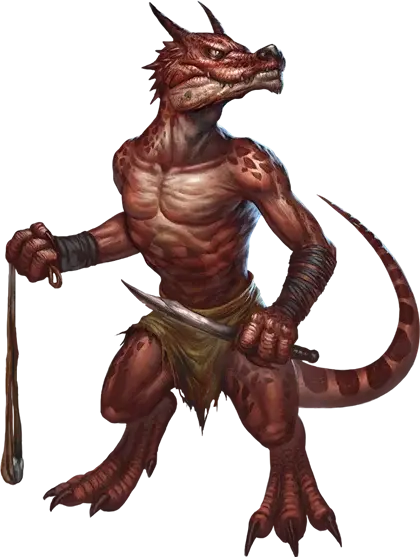

Кобольд
Kobold

Кобольды — трусливые рептилиеподобные гуманоиды, которые поклоняются злым драконам как полубогам и служат им в качестве приспешников и подхалимов. Кобольды обитают в логовах драконов, когда могут, но обычно заселяют подземелья, собирая сокровища и безделушки, чтобы добавить к их собственным крошечным кладам.
Подробнее с лором кобольдов можно ознакомится в статье «Бестиарий: Кобольды».
Сила в числе
Кобольды — яйцекладущие существа. Они созревают быстро и могут прожить более ста лет, становясь под старость «большим вирмом». Однако много кобольдов погибает, прежде чем они достигнут конца своего первого десятилетия. Физически слабые, они — легкая добыча для хищников. Эта уязвимость вынуждает их объединяться. Превосходя числом, они могут выиграть сражение с мощным противником, пусть и зачастую с огромными потерями.
Умелые строители
Кобольды восполняют свою физическую немощность заумностью, с которой создают ловушки и туннели. Их логовища состоят из низких туннелей, по которым они двигаются легко, но в которых тесно более крупным гуманоидам. Кобольды также усеивают свои логовища ловушками. Большинство коварных ловушек кобольдов использует опасные природные явления и других существ. Натянутая веревка может активировать пружинную ловушку, которая мечет глиняные горшки с плотоядной зеленой слизью или швыряет в нарушителей ящики с ядовитыми гигантскими многоножками.
Потерянный бог
В дополнение к драконам, которых они почитают, кобольды поклоняются малому богу по имени Куртулмак. Легенды говорят о том, как Куртулмак был вассалом на службе у Тиамат в Девяти Преисподних, пока Гарл Златоблеск, бог гномов, не украл безделушку из сокровищ Королевы Драконов. Тиамат послала Куртулмака, чтобы тот вернул сокровище, но Гарл Златоблеск разыграл его, обрушив почву и заманив бога кобольдов в ловушку, в подземный лабиринт. Поэтому кобольды ненавидят гномов и розыгрыши любого вида. Самые преданные последователи Куртулмака посвящают себя поиску и освобождению своего потерянного бога из тюремного лабиринта.
Монстры как искатели приключений
В некоторых кампаниях гуманоиды, обычно рассматривающиеся как злая угроза, могут отправиться в приключения вместе бок о бок с любыми другими стандартными расами.
Почему персонаж-монстр?
Создание персонажа — существа, которое обычно используют в качестве злодеев, предоставляет некоторые интересные возможности для отыгрыша. Отыгрываемый ли для комедийного эффекта, или как трагическая история предательства и утраты, или как антигерой, персонаж-монстр даёт игроку шанс поставить перед собой необычную задачу в кампании.
Прежде, чем разрешить персонажей-монстров в Вашей кампании, рассмотрите следующие три вопроса:
Редкость или обыденность?
Решите, насколько обычны орки, гоблины, и им подобные в качестве приключенцев в Вашем сеттинге. Расцениваются ли они как не более необычные, чем эльфы или дварфы? Встречают ли их с подозрением? Роль, которую эта раса играет в Вашем сеттинге, должна определить реакцию, с которой встречают таких персонажей.
Не бойтесь доводить до крайности. Персонажу-орку, возможно, придется замаскироваться в городе или остаться в дикой местности, из страха перед заключением в темнице или яростью толпы. Обязательно поговорите с группой о том, какой реакции такие персонажи могут ожидать от мира. Некоторым игрокам нравится играть изгоями, но, если вы договорились с игроком об одном, не подсовывайте ему другого.
Вы можете решить, что в Вашей кампании существа монстры — это просто ещё одна культура, у которой есть как союзы, так и соперничество с людьми, эльфами и дварфами. Королевство хобгоблинов может быть буфером между королевством людей и зараженной областью, захваченной порождениями Кьюсса. Кобольды могут быть строителями городов, архитекторами хорошо укрепленных, грандиозных сооружений, в которых за плату живут другие народы.
Культурные примечания — стандартное для D&D описание этих существ, но это не значит, что их надо неукоснительно придерживаться в Вашей кампании. Используйте их в качестве отправной точки для ваших собственных идей.
Изгой или посол?
Рассмотрите, как родная культура персонажа–монстра относится к нему. Персонаж — изгой, шпион, посол, или что-то ещё? Поговорите с игроком, чтобы определить, как персонаж пришел к тому чтобы стать приключенцем.
Привязанности персонажа — хорошая отправная точка для рассмотрения этого вопроса. Как привязанность сподвигла персонажа на приключение? Особенности персонажа, его слабости и идеалы также могут также играть роль в придумывании его истории.
Друзья или враги?
Придумайте, что особенное связывает персонажа с другими членами отряда. Орочий колдун мог бы быть заклятым врагом следопыта-дварфа, но эти двое вынуждены сотрудничать, чтобы победить общего противника. Возможно, кобольд-чародей был фамильяром тифлинга-волшебника, и был превращен разозлившимся архимагом в отместку за мелкое оскорбление. Паладин-хобгоблин, возможно, был человеком, но однажды перешел дорогу злой ведьме и был проклят, получив ужасный облик.
Креативная связь между персонажем-монстром и остальными членами отряда помогает сделать компанию незабываемой.
Происхождение монстра
Таблица предлагает несколько идей для персонажа-монстра, добавляемого в кампанию.
| к8 | Происхождение |
| 1 | Вы — шпион, посланный, чтобы уничтожить врагов изнутри. |
| 2 | Вы — жертва проклятия или заклинания превращение [polymorph]. |
| 3 | Вы были воспитаны людьми, эльфами, или дварфами и приняли их культуру. |
| 4 | В юном возрасте вы приняли религию людей, и теперь искренне ей служите. |
| 5 | Вы получили божественное видение, которое направило вас на этот путь, и иногда вы получаете новые видения, которые вас направляют. |
| 6 | Ваш заклятый враг — союзник вашего народа, это вынудило вас оставить ваше племя ради мести. |
| 7 | Злая сущность развратила общество вашего народа. |
| 8 | Травма или необычное событие привели к полной потере памяти о своём прошлом, но иногда к вам приходят обрывки памяти. |
Особенности кобольдов
Ваш персонаж-кобольд обладает следующими особенностями.
Увеличение характеристик. Значение вашей Ловкости увеличивается на 2.
Возраст. Кобольды достигают зрелости к 6 годам, и могут дожить до 120 лет, но редко это делают.
Мировоззрение. Любое.
Размер. Рост кобольдов между 2 и 3 футами (60 сантиметров и 90 сантиметров), а вес от 25 до 35 фунтов (от 11 до 15 килограмм). Ваш размер — Маленький.
Скорость. Ваша базовая скорость ходьбы составляет 30 футов.
Тёмное зрение. На расстоянии в 60 футов вы при тусклом освещении можете видеть так, как будто это яркое освещение, и в темноте так, как будто это тусклое освещение. В темноте вы не можете различать цвета, только оттенки серого.
Склонись, съёжься и умоляй. Действием в свой ход, вы можете жалобно съёжиться и взмолить о пощаде, чтобы отвлечь соседних противников. До конца вашего следующего хода, ваши союзники получают преимущество на броски атаки против врагов, находящихся в пределах 10 футов от вас, которые могут вас видеть.
Использовав эту особенность, вы не можете использовать её снова, пока не завершите короткий или продолжительный отдых.
Тактика стаи. Вы совершаете с преимуществом броски атаки против существа, если по крайней мере один из ваших союзников в пределах 5 футов от этого существа, и союзник дееспособен.
Чувствительность к солнечному свету. Вы совершаете с помехой броски атаки и проверки Мудрости (Восприятие), основанные на зрении, если вы, цель вашей атаки или изучаемый предмет расположены на прямом солнечном свете.
Языки. Вы можете говорить, читать и писать на Общем и Драконьем языках.